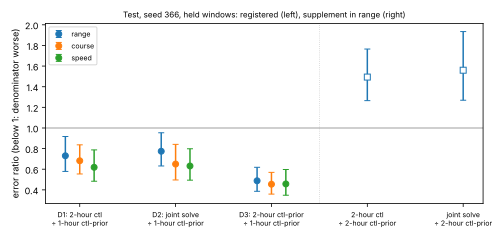
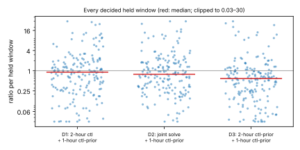
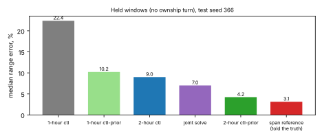

The carried prior against longer windows
2026-11-20 · spec 030 · seeds 364 (tuning, spent), 365 (validation), 366 (test) · gitma2
The question from spec 029's panel
- 1-hour ctl-prior beat the same 1-hour window alone (2.41): more data beats no data
- Against the fair comparators? (b) ctl on 2-hour windows, (c) a joint solve over the turn-free hour and the hour before
- Plus D3: ctl-prior on 2-hour windows
Registered rule: "ctl-prior worse" when comparator ÷ 1-hour ctl-prior has its upper limit below 1.
Registered rule: ctl-prior worse, three times

D1 0.730 [0.579, 0.917] · D2 0.774 [0.632, 0.954] · D3 0.488 [0.386, 0.619]. Right: supplement only.
Averages with wide spread

1-hour ctl-prior better in 43% (D1) and 41% (D2) of windows; twice as bad in about a third.
Error on turn-free windows

The span reference is told the true history and is no ceiling for systems with later bearings.
What the panel narrowed
- D2 is the clean comparison: same past, no later bearings, and it still wins
- D1/D3 include an ownship turn (98%) and a median 29 min of later bearings
- 2-hour ctl-prior over 2-hour ctl: supplement only (medians 1.14, 1.01)
- Legs 1–2 h, contact 1, one simulator; legs longer than the window untested
Next (the owner's choice)
- Spec 029's 1-hour recommendation withdrawn; spec 028's ctl-prior on 2-hour windows stands
- Recommended: close the long-engagement track with a synthesis
- Or: legs longer than the window · reopen with new information
Write-up: /blog/2026/11/20/held-comparators · Record: experiments/20261120-cmp/ · Figures: scripts/research/cmp_charts.py